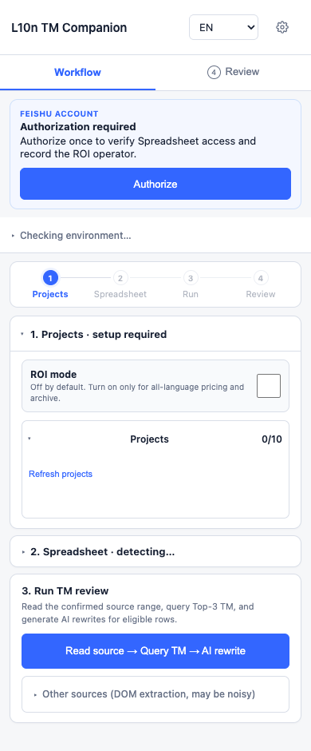
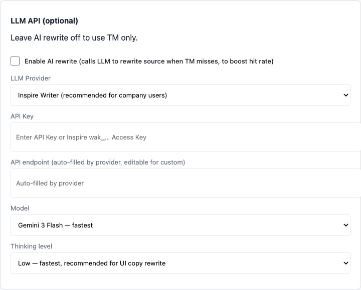
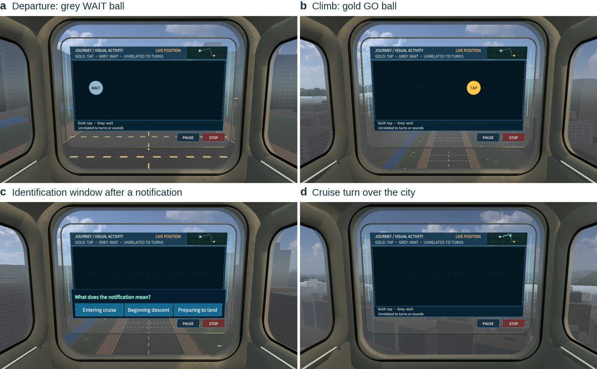
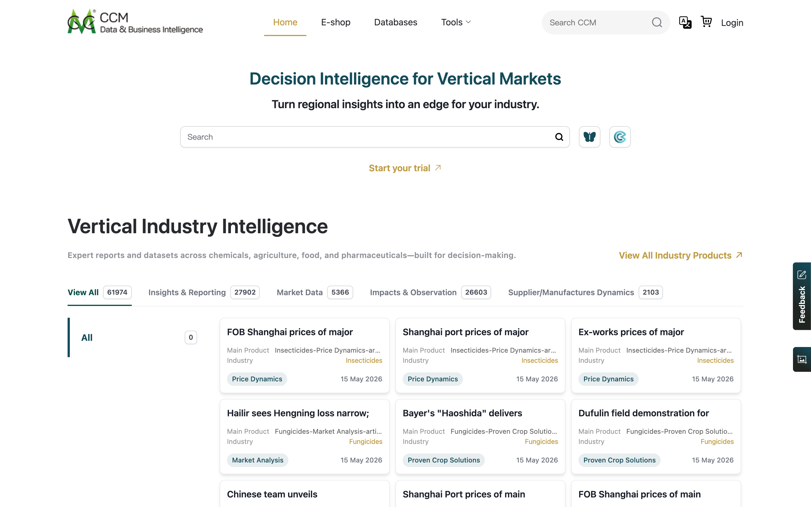

项目成果演示 · AI 产品经理
把模糊的业务问题拆成流程、规则和可验收的结果，
再用原型和数据验证它值不值得做。
悉尼大学人机交互硕士 · 预计 2027.03 毕业
yegenwu.vercel.app · github.com/TRUSOGEN
关于我
01 · 约 8 分钟
从业务问题到 Pilot 的 AI 工作流
02 · 约 5 分钟
在 VR 仿真环境里评测交互方案
03 · 约 3 分钟
漏斗诊断、需求与交付
04 · 约 2 分钟
怎样对应这个岗位
01 · L10n TM Companion · 字节跳动 TikTok LIVE
翻译记忆库（Translation Memory，TM）按历史匹配度影响后续翻译处理和计价。很多新文案和历史文案意思接近、措辞不同，匹配度不够就要重新翻译。
要验证的问题：能不能用 AI 改写英文源文案，把这部分内容拉回可复用区间，同时让质量和收益都能被检查。
01 · 职责边界与关键取舍
改写结果能接入现有 TM 查询、审核和计价流程，收益来源可追溯；直接翻译要重新定义质量与交付标准。
50 以下历史参考太弱，85 以上已可复用。这是首版业务策略，下一版按分数段的可用率、编辑时间和净成本再校准。
01 · 工作流
从飞书读取英文原文，保留来源与行号，查 TM 得到原文匹配度 A
只有 50 ≤ A < 85 才自动生成，其余保留人工路径并记录跳过原因
参考历史原文生成最多 3 条候选，校验占位符、URL、数字，再逐条查 TM
同事选择或编辑最终文本；确认后再编辑，旧分数和估算自动失效
对 C 做最终查询并写回，记录 6 列审计字段；按 A 到 C 的档位差估算成本
A 是基线，B 是候选，C 是人最终确认的文本。候选变好不代表人用了它，所以收益和写回都绑定 C。
TM 分数只说明匹配程度，结构校验只保护特定内容；语义和上下文由人判断，最终采用权在人。
01 · 产品形态与技术架构


待处理文案与写回位置
界面、流程、状态与门禁
桥接签名请求
平台提供评分与模型
确认稿、审计与 ROI
01 · 最难的部分
一句话：确定性交给规则，生成交给模型，价值用可检查的指标证明。
01 · Pilot 结果
口径：70.8% 是生成覆盖率，不是采用率；62 条是首轮可用，不等于最终写回；成本按 Vendor Rate 做影子测算，不代表已实现节省。
01 · 复盘
工具和流程在 Pilot 中跑通，部分候选可用，说明方向可行；首轮可用比例也暴露出候选质量问题。我没有用 70.8% 的覆盖率当成功率汇报。
要按资格跳过、模型无候选、接口失败、校验拒绝分别统计，再判断哪些是合理控制、哪些需要修复，不统称为模型失败。
02 · 毕业研究 · 已完成 · 导师 Dr Tram Tran
场景：自动驾驶空中出租车。飞机进入巡航、开始下降、准备降落时，乘客多半在看手机或屏幕，提示不能抢视觉注意力。
综述 25 篇乘客音频研究：缺少舱噪条件下的实验，且多依赖主观问卷。
语音 / 提示音 × 安静 / 模拟舱噪；四套 Williams 顺序平衡；20 人 × 4 段完整航程 = 240 条通知。
研究设计、声音设计（Python 合成）、Unity / VR 实验程序、数据整理、论文撰写。
把“哪种提示更好”拆成四类证据：识别正确率、正确反应时、航后评分、结束访谈。
02 · 仿真环境

02 · 结果（描述统计）
各条件正确识别率（每个条件 60 条通知）
在仿真场景里固定任务、指标和日志，结果才可复现；表现、体验和代价分开解释。
03 · 广州西美 · 农化行业 B2B 数据平台 · 产品经理实习
搭建访问、搜索、注册、支付 4 段漏斗，定位货币切换导致的支付流失，推动支付链路改版
字段权重、时间衰减、英文词形还原 3 层搜索策略
邮箱优先的 3 步注册，个人 / 企业会员分层
PRD、Figma / Axure 原型、异常分支与验收标准，协同研发 UAT 与上线复盘
我负责问题分析、需求、原型与验收；前后端实现由研发完成。

cnchemicals.com · 线上运营的 B2B 数据平台
04 · 和这个岗位怎么对应
| 岗位职责 | 我做过的对应工作 | 证据 |
|---|---|---|
| 理解客户场景，说清价值与边界 | 先看用户任务和数据，再决定做什么；主动写清能做到哪一步 | 159,629 条文案分析；4 段漏斗 |
| 提炼共性，区分平台与定制 | 把基线、门禁、候选、确认、审计拆成稳定环节 | L10n A / B / C 流程 |
| 定范围、路线与优先级 | 首版收窄到 50–85 区间，先证明可行再扩范围 | 门禁策略与重做计划 |
| 原型、规则与验收，推动上线 | 自己把方案做到能跑，定义失败路径与验收标准 | Chrome MV3 工具；VR 实验软件；西美 PRD |
| 跟踪使用与复用效果 | 指标分层，分母说清楚，不用一个数代表效果 | Pilot 漏斗；20 人对照实验 |
诚实的缺口：没有机器人、工业仿真或世界模型训练的实战经验，正在系统补；我能先贡献需求判断、原型和验证。
如果加入
跑通现有产品，跟一个客户任务走完全流程；整理用户任务图、能力边界和基线。
选一个价值明确、范围可控的问题，做原型、规则和验收，小范围验证，记录失败。
跟踪任务结果和成本，检查第二个项目能否复用，形成下一阶段建议。
① 这个岗位目前负责哪个模块，最重要的用户和任务是什么？ ② 前三个月希望交付什么，怎样判断验证有效？ ③ 最近一个客户需求，是怎样决定进入平台、配置还是项目定制的？
谢谢，欢迎提问。